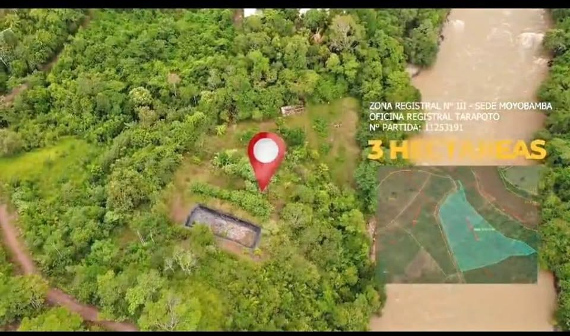

Precio desconocido 5 ha

🌟 ¡OPORTUNIDAD ÚNICA DE INVERSIÓN EN TABALOSOS! 🌟 5 Hectáreas con Título de Propiedad y Recursos Completos ¿Buscas el lugar perfecto para tu próximo proyecto agrícola o turístico? Este terreno de 5 hectáreas lo tiene todo para asegurar el éxito de tu inversión en San Martín. ✅ Seguridad Jurídica: Título de propiedad en regla listo para transferir. ✅ Agua Permanente: Colindante directo con el Río Mayo (ideal para riego, captación continua o atractivo turístico). ✅ Energía Eléctrica: Postes de luz listos para la instalación e independización. ✅ Excelente Acceso y Ubicación: En una de las zon